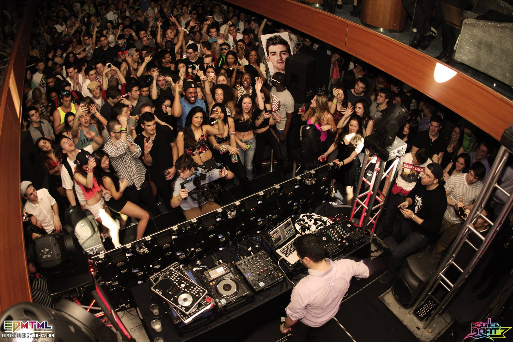
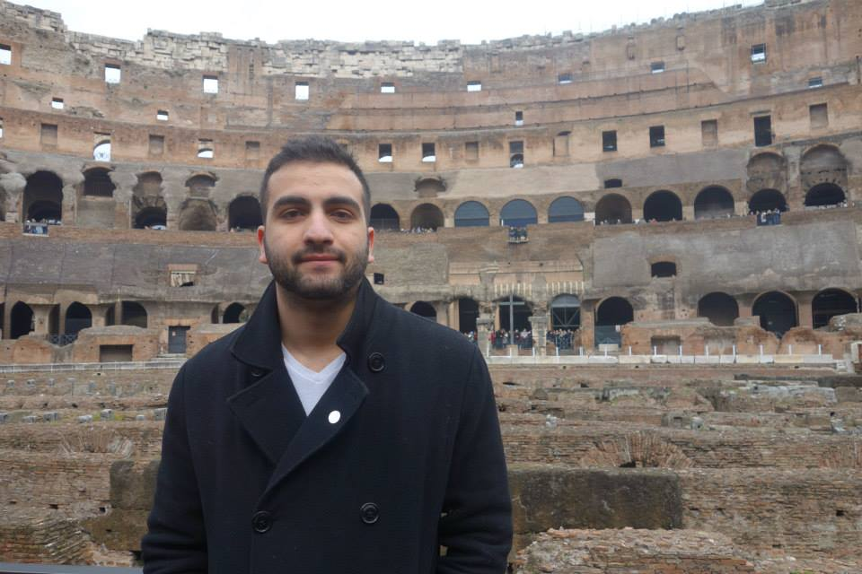

My name is Ahmed Farag. I recently graduated from Rutgers University and obtained my bachelors in Computer Science with a minor in Psychology. I initially started my college career as a Biology Major due to my curiosity of how things worked. Why not learn about how we work as human beings?
My creative side started to come out as well as I entered college with music. I started to mess around with cool DJ technology and practice the intricacies of mixing music as well as creating it. I eventually made my way to being able to perform before The Chainsmokers on a yacht which was amazing. I had an interview before that performance and they asked me how technology allowed me to learn the skills quicker and that is when my passion changed and decided to pick up Computer Science as my major to learn more about how technology works.
I decided to broaden my horizons and study abroad my Junior year in Berlin, Germany. The experience was a once in a lifetime thing where I had the freedom to travel through Europe with no worries. It opened my eyes to the different cultures and was a huge life lesson for me. While abroad I worked with Weekend Student Adventures(WSA) to help branch out their campaign but found myself working with their iOS team which is where my software development began. After that I was hooked on this aspect of computer science and pursued it further when I returned home.
4 years later I have been involved in countless projects including a real world wayfinding application that is currently being used in a major hospital in New Jersey and soon to branch out to others. These last years have really enriched my knowledge in the field of Computer Science but there is still more to learn as technology changes every day!